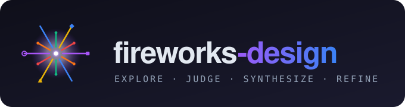

An open-source Claude Code workflow that replicates ClaudeDesign.
The pages below are real pipeline output — explore → judge → synthesize → refine → polish.
Open-source vector DB. Hero, benchmark stat strip, Python snippet, 3-tier pricing.
CLI homepage with install command, copy button, terminal demo, feature cards.
Designer one-pager. Asymmetric editorial grid, 4-project works grid, contact.
The six-phase pipeline explained with inline diagrams — the methodology behind the output.